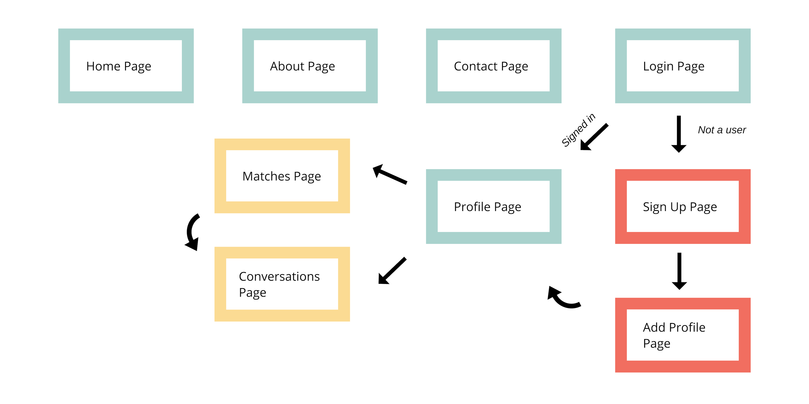
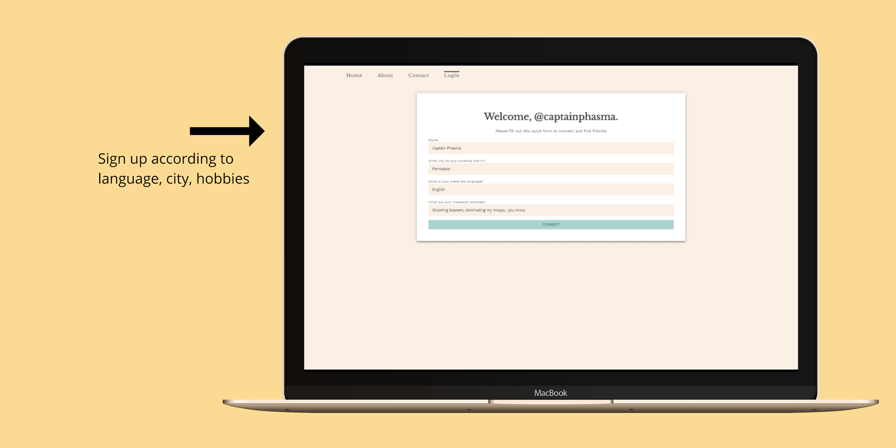
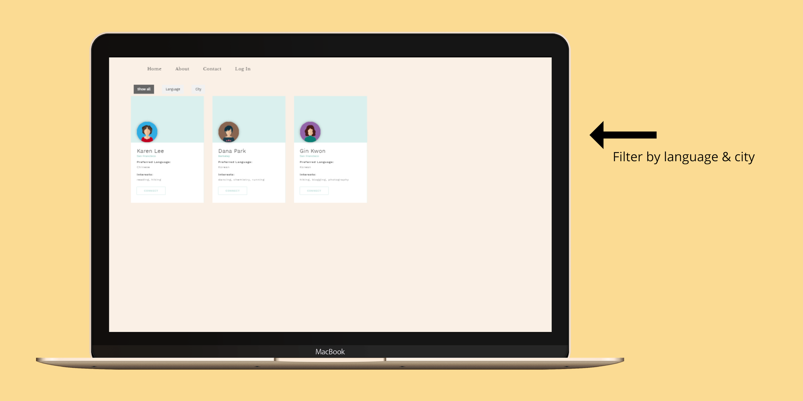

03. Village
On Karlie Kloss and immigrants
“Immigrants, we get ze job done.”
- Lin Manuel Miranda
The summer before junior year, at Kode With Klossy, I was presented with a challenge: design and code a website that can benefit a community.
Once we finished with it, Karlie Kloss herself approved of our project. (She's super cool, and you should check out her efforts to gain gender equality in tech.)
As my first website project ever, I like to compare Village to my designs and code now. I do believe that I've grown quite a bit as a programmer!
Project Type
website
Languages
HTML, CSS, Javascript, Ruby
Framework & Backend
Built on Sinatra
Timeline
Three days (!) in June
Supported By
Kode With Klossy
Brief Overview
There were two other girls in my team: Mai-Thanh and Ossema. As we discussed the possible ventures for our website, we reached a common subject. We were all second-gen immigrants living in California. Using this in light of recent political events, we decided that our project would be about helping the immigrant community.
Website Functions
Essentially, Village is a Tinder for immigrant parents, but for finding friends, not potential romantic partners.

A user can sign up, fill out a profile, and find “matches” in their area. Once a match is made, the two can meet up at a “safe-spot”, such a local Starbucks cafe.


The goal of Village is to help immigrants feel more comfortable in their respective neighbourhoods. From listening to our parents’ experiences, we knew how hard it can be to arrive in a brand-new home in a brand-new country.
Reflection
This was the first of my numerous coding projects, so by the end of it, I had numerous takeaways.
Responsive Design
Looking back, we could have made our website much more responsive. Instead, we used ‘px’ connotations for everything. EVERYTHING. After this project, I’ve been working to use more responsive methods.
Constant Theme
We could have made the colour and font theme consistent. This issue stemmed from miscommunication between each team member—we each took charge of a few pages and designed them to our own satisfaction. Communication is IMPORTANT.